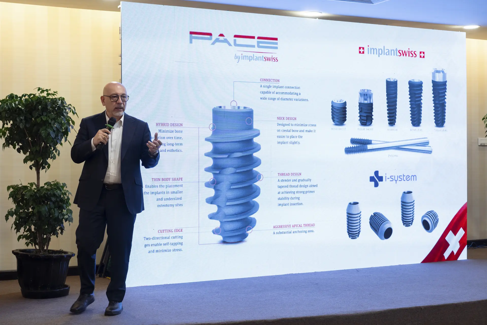

Khám chẩn đoán đa chiều, phát hiện sớm nguy cơ và can thiệp bảo tồn tối đa răng thật tự nhiên. Quy trình điều trị êm dịu, không đau tiêu chuẩn Thụy Sĩ giúp bạn an tâm chăm sóc nụ cười cho cả gia đình.
Răng không đau chưa chắc đã hoàn toàn khỏe mạnh. Sâu răng giai đoạn đầu, viêm nướu, vết nứt nhỏ, miếng trám cũ bị hở... đều diễn tiến âm thầm trước khi gây ra các triệu chứng rõ rệt.
Ứng dụng chẩn đoán hình ảnh kỹ thuật số và khảo sát 360° giúp phát hiện các tổn thương vi thể, viêm nướu tiềm ẩn trước khi chuyển biến thành bệnh lý phức tạp.
Nguyên tắc vàng tại Flora là ưu tiên bảo tồn tối đa cấu trúc răng thật. Không lạm dụng thủ thuật lớn, chỉ định chính xác giải pháp vừa đủ với chi phí tối ưu nhất.
Xây dựng bản đồ sức khỏe răng miệng cá nhân hóa, hướng dẫn vệ sinh chuẩn y khoa tại nhà và chủ động nhắc lịch tái khám định kỳ đồng hành cùng cả gia đình.
Bạn nên đặt lịch kiểm tra nếu đang gặp một hoặc nhiều biểu hiện dưới đây:
Lời khuyên từ Bác sĩ: Không nên chờ đến khi đau dữ dội mới điều trị. Khi tổn thương tiến triển sâu hơn, phương pháp có thể phức tạp hơn và chi phí cũng có thể tăng theo.
Khảo sát chi tiết đa chiều từ triệu chứng lâm sàng đến cấu trúc xương hàm, đảm bảo chẩn đoán chính xác tuyệt đối.
Hệ thống giải pháp điều trị chuyên sâu, tôn trọng tối đa mô răng thật và bảo tồn nụ cười bền vững.
Phù hợp với khách hàng muốn kiểm tra định kỳ hoặc đánh giá sức khỏe răng miệng trước điều trị.
Lưu ý: Dịch vụ chụp phim và bôi fluoride được thực hiện khi có chỉ định, dựa trên tình trạng và nguy cơ răng miệng của từng khách hàng.
Phù hợp với tình trạng chảy máu khi đánh răng, hôi miệng, nướu sưng hoặc răng có dấu hiệu lung lay.
Lưu ý: Cạo vôi thông thường không thay thế cho điều trị nha chu. Bác sĩ sẽ đánh giá tình trạng nướu, độ sâu túi nha chu và mô nâng đỡ răng để chỉ định phương pháp điều trị và lịch theo dõi phù hợp.
Trám răng giúp phục hồi vùng mất mô do sâu, mòn, vỡ nhỏ hoặc miếng trám cũ không còn phù hợp.
Lưu ý: Bác sĩ sẽ lựa chọn vật liệu và phương pháp phục hồi dựa trên vị trí, mức độ tổn thương và lực nhai của từng răng.
Điều trị tủy được cân nhắc khi tủy răng viêm hoặc hoại tử, thường liên quan đến sâu lớn, chấn thương, vết nứt hoặc nhiễm trùng.
Lưu ý: Chỉ định điều trị được đưa ra sau khi bác sĩ đánh giá triệu chứng, thăm khám và dựa trên dữ liệu hình ảnh. Với răng đã điều trị tủy nhưng vẫn còn nhiễm trùng, bác sĩ sẽ cân nhắc điều trị lại hoặc phẫu thuật cắt chóp dựa trên nguyên nhân và khả năng bảo tồn răng.
Phù hợp với răng không còn khả năng bảo tồn hoặc răng khôn gây ảnh hưởng đến sức khỏe răng miệng.
Lưu ý: Với nhổ răng khôn, Bác sĩ sẽ đánh giá hướng mọc, khả năng vệ sinh và mức độ ảnh hưởng đến răng kế cận; đồng thời chỉ định chụp phim khi cần để xây dựng phương án phù hợp.
Phù hợp với khách hàng muốn cải thiện màu răng sau khi sức khỏe răng và nướu đã được kiểm tra.

Chuyên gia Cấy ghép Implant & Phục hình thẩm mỹ
“Nha khoa là sự giao thoa giữa y khoa, kỹ thuật và thẩm mỹ.”
Mỗi kế hoạch điều trị được xây dựng trên nền tảng chẩn đoán kỹ lưỡng, chỉ định phù hợp, thao tác có kiểm soát và theo dõi dài hạn, hướng đến sự cân bằng giữa chức năng, thẩm mỹ và trải nghiệm của khách hàng.
Mọi chi phí đều được bác sĩ thông báo rõ ràng, cam kết trọn gói không phát sinh.
Cùng bác sĩ Flora xây dựng bản đồ sức khỏe răng miệng cá nhân hoá với các phương pháp điều trị phù hợp.
Miễn phí chụp phim X-quang kỹ thuật số & Thăm khám 1:1 cùng Bác sĩ Chuyên Khoa